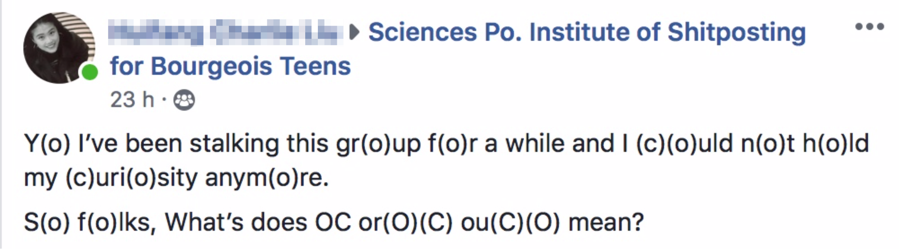

Un contenu élitiste, que seul un public initié peut déchiffrer
La barrière "légale" d’adhésion et de modération des communautés
Il est fascinant de constater que les groupes de neurchi et les communautés de meme se caractérisent presque toutes par un système d’adhésion sous forme de questions et de recommandations faites au « candidat », l’utilisateur qui souhaite intégrer le groupe.
En effet, pour devenir membre, il faut au préalable lire un ensemble de règles et adhérer théoriquement à une « bonne conduite » au sein de la communauté numérique. Les règles sont relativement similaires entre les différentes communautés et consistent souvent à proposer, dans les publications, des contenus originaux uniquement ou à éviter les propos discriminants ou violents. Il est aussi demandé de ne pas faire de tag sauvage.
Ces règles peuvent être écrites sous un ton décalé, parfois drôle à travers un esprit autoritaire, menaçant, ou moqueur. Cet « humour » utilisé est en fait ce que l’on pourrait considérer comme un premier filtre : on souhaite vérifier que l’utilisateur qui s’apprête à rentrer dans la communauté est dans le même « état esprit », joueur, et potentiel bon public face aux publications du groupe, quasiment toujours humoristiques, voire cyniques. Les règles sont la plupart du temps accompagnées d’un certain nombre de questions auxquelles l’utilisateur doit soumettre sa réponse. Toujours dans cette idée d’avoir un public « approprié » pour la page, le ton est humoristique et peut demander à l’utilisateur de raconter une anecdote amusante, un mot descriptif, etc. Cela peut aussi mettre d’emblée de la distance pour quelqu’un qui ne connaît pas les Neurchis.
La modération fluctue en fonction de la taille et de l’importance des groupes mais tout contenu jugé « hors-cadre », que cela soit parce qu’il est nuisible ou parce qu’il ne correspond pas à « l’esprit » du groupe est susceptible d’être enlevé, et l’utilisateur exclu. Le pseudo aspect sélectif de ces groupes vise à développer leur communauté certes, mais pas forcément avec tout le monde. De plus, tout cela est « repoussant » pour une personne non-initiée.

Illustrations : règles et formulaire d'adhésion du groupe Teurcréa
Le jargon de la communauté des "Neurchis" ...
Pour mieux comprendre le phénomène linguistique autour des memes, nous avons pu étudier l’œuvre de l’américain Harold Schiffman, qui s’intéresse au lien entre langage et sociologie, notamment dans son ouvrage « Linguistic culture and language policy »1. L’auteur met en évidence l’aspect officieux, induit et implicite des codes de langage dans les différentes sociétés. Il existe en fait des règles communes de grammaire, de syntaxe et d’expression, mais aussi tout un panel d’usages qui ne sont pas enseignés en tant que tel, mais qui sont compris et acceptés par les même membres d’une communauté.
L’utilisation de ces codes peut aussi être un facteur de différenciation sociale, puisque la fréquentation d’un certain milieu est nécessaire à l’acquisition subtile de ces codes de langage. Ainsi, ceux qui parlent d’une certaine manière peuvent s’identifier et se lier pour créer une communauté. Le sociologue s’appuie sur différentes langues et sociétés pour illustrer ses propos, mais aussi sur différentes périodes historiques : il démontre que lors de guerres et de conflits d’oppression des peuples, la langue était un enjeu crucial. Nombre de communautés ont vu leur langue censurée ou supprimée, dans le but de détruire la culture du peuple, mais aussi avec la conviction que l’interdiction de la langue mettrait à mal les groupes et sous-communautés existants au sein du société. On comprend alors le pouvoir de fédération d’un langage et de ses sous-communautés. Les éléments de langage sont partout utilisés pour mettre à distance et créer une fracture entre ceux qui les comprennent et ceux qui ne les comprennent pas.
En ce qui concerne notre sujet, on peut considérer que le fonctionnement est similaire au sein des groupes de memes. Les utilisateurs partagent un langage subtil, bordé d’expressions et de manières de s’exprimer particulières. L’aspect humoristique qui définit le meme en soi renforce cette importance du code linguistique. L’utilisateur, qui ne comprend pas ce langage, ne peut pas du tout être touché par les publications de la communauté et en est exclu. L’effet est également générationnel : le jargon de la communauté des Neurchis s’appuie énormément sur des références à la culture Internet et le langage est en lui-même proche de celui des jeunes générations.
... et des dialectes encore plus spécifiques dans chaque groupe
Certaines communautés de memes vont plus loin que d’autres dans la mise à distance avec les non-initiés en développant de véritables dialectes internes. Ces dialectes reposent sur le jargon de ce qu’on pourrait appeler « l’intersyndicale des Neurchis » (cf. lexique), mais aussi sur la langue, la syntaxe, l’orthographe, la grammaire, les expressions, etc. Pour illustrer ces propos, reprenons l’exemple de Teurcréa, groupe Facebook qui a développé une identité visuelle et linguistique bien particulière. L’orthographe, la grammaire et la syntaxe sont volontairement erronées ou maladroites, des mots anglais sont francisés et donc inventés (desigue graphique, graduer), des articles sont oubliés, etc. On peut aussi mentionner La Taversne qui se démarque par son utilisation du vieux français, puisque le thème du groupe est médiéval.
Illustration : le dialecte de Teurcréa
Illustration : le vieux français sur le groupe La Taversne
La sanction de la création d’un meme inapproprié, garante d’un contenu de qualité
On l’a vu, il faut pouvoir passer le premier filtre d’entrée d’un groupe de Neurchi, avec la procédure d’adhésion. Mais pouvoir adhérer à un groupe ne signifie pas qu’on l’a intégré réellement. Une fois les publications accessibles, on entre alors dans une phase d’apprentissage des codes pour déchiffrer les memes. Si on ne comprend pas les éléments de langage et les références partagées par la communauté, alors on reste en réalité en périphérie. Ces références sont plus ou moins faciles à comprendre. Certaines sont communément partagées sur plusieurs groupes de Neurchi ou dans d’autres communautés de memes (comme le fameux « OC »). Une rapide recherche sur Internet peut également aider à saisir le sens de tel ou tel terme.
Ensuite, pour publier des memes et devenir un membre actif de la communauté de Neurchi, il faut en revanche réellement maîtriser ce langage. La maîtrise de tous ces codes est exigeante et est une condition essentielle pour qu’un membre de la communauté publie un meme accepté par tous. À défaut d’être soumis à une approbation préalable à la publication par les modérateurs (on parle de « passer le filtre »), le meme est soumis au jugement de la communauté. Une création inappropriée peut être supprimée et le membre risque même, dans le cas où cela est répété, de se voir bannir du groupe. Tout cela signifie qu’en réalité si on ne comprend pas les publications d’un groupe de Neurchi, alors c’est que le groupe n’est pas fait pour nous.
Une communauté constituée d’une population assez homogène et un effet de club et d’entre-soi
Sur les groupes de Neurchis, on a le sentiment que les membres sont relativement identiques. En plus de partager des intérêts communs virtuels, les Neurchis partagent aussi probablement des caractéristiques communes dans la vraie vie. La population qui constitue une communauté est en réalité assez stéréotypée. Si on prend l’exemple de Neurchi de Kemar, les statistiques (cf. entretien) nous montrent bien que ce sont en très grande majorité des hommes âgés de 18 à 25 ans. On a un effet de génération. Ces groupes sont créés par des jeunes et pour des jeunes. Une personne de plus de 30 ans n’y verra sans doute que peu d'intérêt et ne comprendra probablement pas l’utilité de ce genre de communauté.
En allant « fouiller » plus loin et en regardant aléatoirement le profil Facebook des membres, on s’aperçoit que ce sont surtout des étudiants du supérieur. Beaucoup ont en effet renseigné le nom d’écoles de commerce, d’écoles d’ingénieurs, d'écoles d'art, de classes préparatoires ou encore d’instituts d’études politiques sur leur profil Facebook. Une hypothèse consisterait à dire que ce sont des groupes qui appartiennent déjà à une communauté dans la vie réelle (comme c’est le cas dans les Grandes Ecoles) et ils reproduisent alors ce schéma dans les groupes de Neurchis. On peut aussi questionner l’attrait de cette population pour ce type de contenus. Peut-être qu’ils trouvent dans les communautés de Neurchis et le partage de memes un certain besoin de se divertir, d’avoir un espace où on ne se prend pas au sérieux et où on est jugé sur des critères humoristiques. Bien sûr, ce portrait dressé n'est pas représentatif de l'intégralité des membres de ces groupes Facebook, mais d'une majorité.
L’homogénéité des groupes n’est pas dérangeante en soi, mais elle peut le devenir. On pourrait en effet avoir une déviance liée à « l’entre-soi ». On verrait alors émerger un contenu avec un humour un peu orienté, qui pourrait même être discriminant envers certaines personnes. On aurait alors une forme de consensus, sans réellement qu’une voix raisonnée s’oppose à cela au sein de la communauté. Cela reste cependant une hypothèse, fondée sur les dérives connues d’autres communautés en ligne, car notre immersion dans plusieurs groupes de Neurchi nous a montré qu’ils sont en réalité bienveillants et semblent être préservés de ce genre de déviances.
Le rejet du mainstream comme mot d’ordre
Cette étude nous a permis de constater qu’il existe un paradoxe sociologique : l’individu souhaite se démarquer et être reconnu pour ses qualités individuelles mais dans la recherche de ce but, veut être approuvé selon les codes du groupe. Ce phénomène est observable au sein des communautés de Neurchi, puisque nous avons démontré l’importance de la « sélection » et des stratagèmes utilisés pour vérifier que l’utilisateur correspond bien avec la mentalité du groupe
Nous remarquons une véritable « course à l’originalité ». En effet, l’indication par exemple de l’originalité d’une création est visible à travers la mise en valeur des initiales "OC" (c’est d’ailleurs devenu une tendance à présent moquée). Les créateurs de memes sont fiers de leur idée, de leur vision et de leur touche humoristique.
Ainsi, on rejette le « mainstream », c’est-à-dire ce qui a déjà été vu ou repris, pour plusieurs raisons. En premier lieu, l’humour des memes est en soi centré autour de l’idée de répétition et de reprise. Le meme utilise des images ou des mots existants et connus (notamment trouvables sur Neurchi de templates), pour créer une mise en dérision et une forme de moquerie ou de critique implicite d’un phénomène. Le meme est donc en soi une répétition et il se doit donc d’être original, pour ne pas perdre tout son intérêt.
L’humour des memes est également particulièrement piquant, satyrique ou cynique : il tend finalement à provoquer un regard critique de l’utilisateur sur des faits. Le meme est ainsi souvent politique et sociologique. En ce sens, celui qui crée le meme propose ainsi son analyse subjective sur une situation. L’enjeu est de proposer l’assemblage de mots et d’images le plus pertinent. Le meme permet d’exprimer plusieurs idées complexes en une seule image frappante : le créateur veut ainsi démontrer sa capacité à associer des concepts et à critiquer un ou plusieurs éléments, d’une manière inédite. On veut soumettre au groupe une vision du monde.
Enfin, on peut considérer que le rejet du mainstream s’explique par le support du meme : le succès et l’essence du numérique repose notamment sur l’innovation permanente. Les tendances Internet proposent de nouvelles manières de s’exprimer et de partager, donc le meme évolue aussi. Avec les nouvelles technologies disponibles, le meme peut devenir interactif ou même animé. La nouveauté est intrinsèquement liée et ainsi le mainstream, refusé.
-
Schiffman Harold, « Linguistic Culture and Language Policy », 1996, Routledge